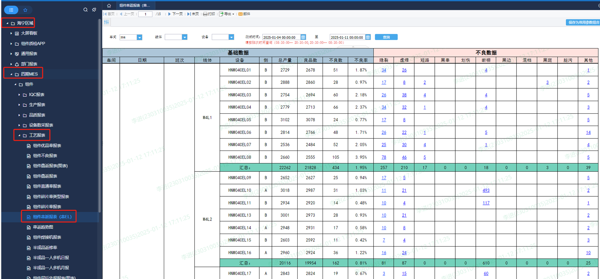

1、可按基地、车间、月/周/日/、班别、线体、机台统计串焊机不良类型
2、串AOI检测数据需与MES对接
3、关联MES数据，数据自动采集
4、查询时间减少20%，按月份查询优化时间在30s以内
数据来源与目前《帆软报表》-《海宁区域》-《四期MES》-《工艺报表》-《组件串返报表（串EL）》一致
样式与现有的报表保持一致
串返增加电池片厂家、电池片型号，原型待更新 -需厂家设备提供，工时暂时无法提供


数据来源：AOI设备，已采集